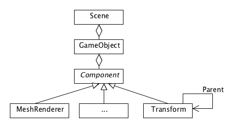
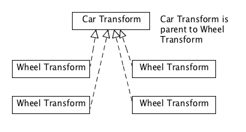
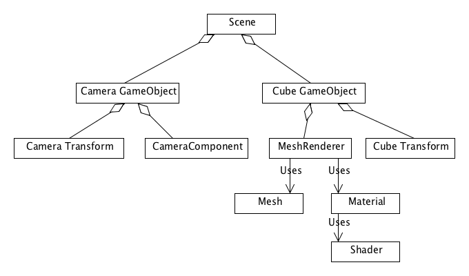

Part 1 – The component based scenegraph
You will here get familiar with one of the most basic KickJS concepts: The component based scenegraph.
A scenegraph is a data structure, which contains all elements used in the virtual 2D or 3D scene. This includes both visual objects (such as meshes) and non-visual objects (such as scripts).
KickJS uses a component-based scenegraph, which means that the scene is composed of a number of container objects called GameObject. Each GameObject then can have a number of components attached.

So a scene can contain a number of GameObject. Each GameObject can contain a number of components, however a GameObject will always contain a Transform component – even through the component may not be visible.
The Transform component contains the spatial information (position, rotate, scale) of the component. The Transform component also contains a reference to a parent transform:
- Parent reference is null, the spatial information is relative to the global coordinate system
- Parent reference is another transform object: the spatial information is relative to the other transform object.
This approach allows a hierarchical structure of the scene, which is very useful in case you want to create rigid body animations.
A typical example of this hierarchical structure can be seen on the figure below where the car transform is the parent to the four wheel transforms. This means that whenever the position of the car is changed the four wheel simply follow along.

Now let’s take a look at a real code example:
// init engine (create 3d context)
var engine = new KICK.core.Engine('canvas');
// create a game object in [0,0,0] facing down the -z axis
var cameraObject = engine.activeScene.createGameObject();
cameraObject.transform.position = [0,0,5];
// create a orthographics camera
var camera = new KICK.scene.Camera({
perspective: false,
left:-5,
right:5,
top:5,
bottom:-5
});
cameraObject.addComponent(camera);
// create material
var shader = engine.project.load(engine.project.ENGINE_SHADER_UNLIT);
var material = new KICK.material.Material(engine,{
shader: shader,
uniformData:{
mainColor: [1,1,1,1]
}
});
// create cube
var gameObject = engine.activeScene.createGameObject();
gameObject.transform.position = [0.0,0,0];
var meshRenderer = new KICK.scene.MeshRenderer();
meshRenderer.mesh = engine.project.load(engine.project.ENGINE_MESH_CUBE);
meshRenderer.material = material;
gameObject.addComponent(meshRenderer);
We here create a simple scene with a single cube and a camera. The important thing to notice is that two GameObjects are created (Line 4 and line 24). The Camera component and the MeshRenderer component are added to their game object in line 14 and 29.

The camera uses orthographic projection, which will render objects in the same size on the screen no matter the distance to the camera. Since the camera as default looks down the negative z-axis, has a near-plane at 0.1 and a far-plane at 1000 we move the camera to the position z=5 for the cube to be inside the view volume. Besides we change the size view volume to have a height of 10 units and a width of 10 units.
Materials and shaders are used to visualize the mesh. These two things will be described in a later tutorial.

- Open the following fiddle http://jsfiddle.net/MBRW5/ and try to change the transform (position, rotate and scale) of the cube and the camera. The API documentation for the transform can be found here: (Transform)
- Open the following fiddle http://jsfiddle.net/Yf2BV/ and try to change the transform (position, rotate and scale) of gameObject and gameObject2.